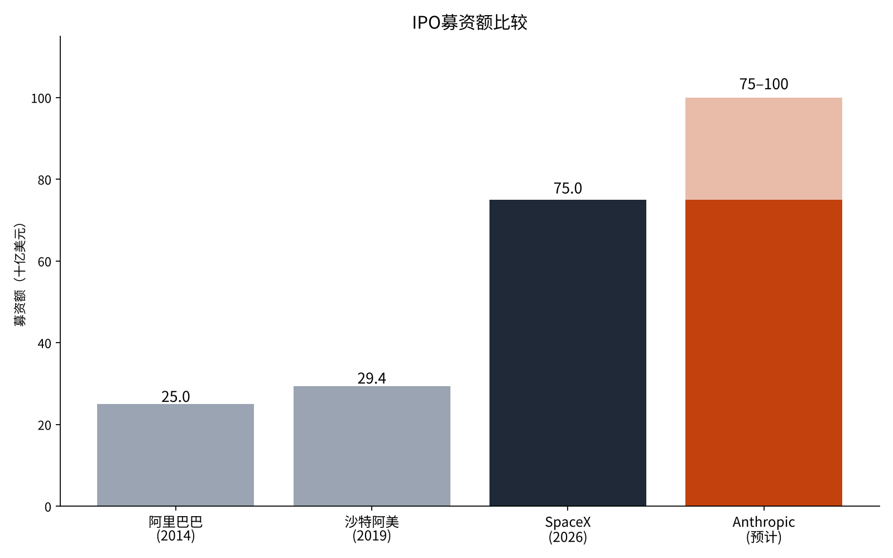
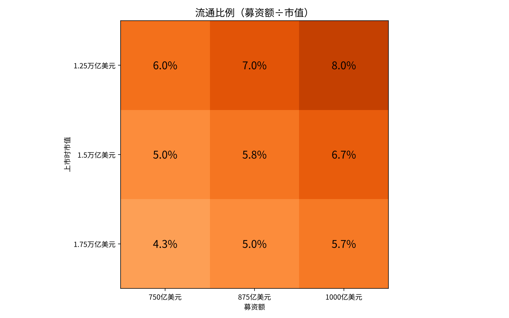

Anthropic募资750亿至1000亿美元是史上最大吗——从过去的超大型IPO看规模与上市首日
Anthropic于10月26日向美国证券交易委员会（SEC）公开提交了上市注册文件（Form S-1）[1]。据报道，路演最早可能在美国时间11月10日启动，预计募资750亿至1000亿美元[9]。
今年6月，SpaceX刚以750亿美元成为史上最大的IPO[6]。仅仅5个月后，同等规模的上市又要来了。
本文的问题是：Anthropic的募资额与过去的超大型IPO相比有多大，从上市首日及其后发生的事情中又能得出什么结论。
- Anthropic的募资额（750亿至1000亿美元）与SpaceX的750亿美元持平或高出三成以上，相当于沙特阿美的2.6至3.4倍、阿里巴巴的3.0至4.0倍。
- 另一方面，流通比例只有4.3%至8.0%，PSR为63至89倍，已计入销售额增长到目前数倍的预期。
- 过去的统计显示，10亿美元以上的IPO首日平均上涨17.9%，但2012至2024年上市的公司三年内跑输市场25.5%。

问题与背景
IPO（首次公开募股）是指未上市公司首次在市场上发售股票、筹集资金。募资额等于发售股数乘以发行价。承销商额外发售股票的权利称为“绿鞋”，行使后募资额会增加一成多。
从过去的记录看，2014年阿里巴巴募资250亿美元，2019年沙特阿美募资294亿美元（均含绿鞋）[3][4][7]。2026年6月，SpaceX以每股135美元发售5.5556亿股，募资750亿美元[6][12]。
路演是指上市前公司与证券公司拜访机构投资者，收集其希望购买的股数和价格的期间。发行价根据收集到的需求确定。Anthropic的路演预计持续一周左右[5]。
募资额越大，所需的买家和资金就越多。如果上市首日需求不足，股价会跌破发行价；需求过旺则首日大涨，意味着公司卖得太便宜。这种“首日涨幅”长期以来是学术研究的对象[2]。
本文还使用另一个尺度“流通比例”，即募资额除以上市时的市值，表示公司整体中有多大比例新进入市场。流通比例越小，发售的股票相对公司规模就越少。
此外还使用PSR（市销率），即市值除以年销售额，表示股价相当于多少年的销售额。由于亏损公司也能计算，常用于比较成长型企业的估值。
数据与方法
本文使用各公司的注册文件和招股说明书（SEC）、公司公告以及学术性的IPO统计[1][2][3][4]。Anthropic的募资额在申报阶段尚未确定，因此以报道的区间（750亿至1000亿美元）为前提[5][9]。
市值同样未定。报道中的数字从1.2万亿美元到2万亿美元不等[10][11]。本文设定1.25万亿、1.5万亿和1.75万亿美元三种情形。
截至2026年6月的12个月，Anthropic的销售额为197亿美元[5]。将这一数字与三种市值组合计算PSR。
方法分为四步。第一，将募资额与过去的超大型IPO比较。第二，按募资额与市值的组合计算流通比例。第三，按三种市值计算PSR。第四，根据佛罗里达大学杰伊·里特教授的IPO统计，确认上市首日的涨幅及其后三年的表现[2]。
结果

按募资额比较，Anthropic即使只募750亿美元也与SpaceX持平，若达1000亿美元则高出三成以上。相当于沙特阿美294亿美元的2.6至3.4倍，阿里巴巴250亿美元的3.0至4.0倍。
| 项目 | 年份 | 募资额（亿美元） | 上市时市值（亿美元） | 流通比例 |
|---|---|---|---|---|
| 阿里巴巴 | 2014 | 250 | 1680 | 14.9% |
| 沙特阿美 | 2019 | 294 | 17000 | 1.7% |
| SpaceX | 2026 | 750 | 18000 | 4.2% |
| Anthropic（中间假设） | 2026 | 875 | 15000 | 5.8% |
流通比例方面，阿里巴巴为14.9%，沙特阿美为1.7%，SpaceX为4.2%。近期这两宗超大型项目都只出售了公司的一小部分。Anthropic在中间假设下也仅为5.8%。
关于上市首日的走势，里特教授的统计显示，1980至2025年美国IPO的首日涨幅简单平均为19.0%，按募资额加权为7.0%[2]。若只看2001至2025年募资10亿美元以上的项目，平均为17.9%[2]。SpaceX上市首日上涨19%[8]。
上市后的表现则呈现另一面。2012至2024年上市的经营性公司，三年持有收益为7.6%，但比整体市场低25.5%[2]。即便首日上涨，此后三年跑输市场的情况也很多。
在1.5万亿美元的假设下，PSR为76.1倍，相当于当前76年的销售额。1.25万亿美元时为63.5倍，1.75万亿美元时为88.8倍。无论哪种假设，股价都以销售额增长数倍为前提。
敏感性分析

我们按三种募资额和三种市值计算了流通比例。最小为4.3%（市值1.75万亿美元、募资750亿美元），最大为8.0%（1.25万亿美元、1000亿美元）。九种情形全部低于阿里巴巴的14.9%，高于沙特阿美的1.7%。
| 市值＼募资额 | 750亿美元 | 875亿美元 | 1000亿美元 |
|---|---|---|---|
| 1.25万亿美元 | 6.0% | 7.0% | 8.0% |
| 1.5万亿美元 | 5.0% | 5.8% | 6.7% |
| 1.75万亿美元 | 4.3% | 5.0% | 5.7% |
其次，对上市首日的涨幅设定三种情形。若为0%，首日买家没有涨价收益。若为按募资额加权的平均7.0%，875亿美元的项目约为61亿美元；若为10亿美元以上项目的平均17.9%，约为157亿美元。首日涨幅不同，首日流动的资金规模相差两倍以上。
用同样的思路，还可以看销售额需要增长多少，PSR才能降到当前大型科技股的水平。例如在1.5万亿美元市值不变的情况下，要把PSR降到30倍，销售额需要达到500亿美元，约为目前197亿美元的2.5倍。

讨论
从结果看，Anthropic的上市按金额将跻身史上最大之列，但发售比例相对公司规模较小。流通比例越小，进入市场的股票越少，股价越容易随供需平衡而波动。
另一方面，流通比例小也会对上市后的股价形成支撑。待售股票少，只要买家仍然踊跃，股价就不易崩溃。SpaceX首日上涨19%，恐怕与其4.2%的小比例发售不无关系。
也有相反的看法。募资额如此之大，买家仅靠手头资金不够，会卖出其他股票来筹资。这种抛售可能在上市前后拖累其他大盘股。本文的数据无法验证这一点。若逐日考察SpaceX上市前后其他大盘股的走势，或许能在一定程度上验证，留作下一个课题。
数据的局限也很大。比较的项目只有三宗，上市的国家和时代都不同。沙特阿美以国内投资者为主，国家继续持有绝大部分股份。SpaceX上市后的表现只有5个月。里特教授的统计以美国上市为主，几乎不包括这三宗规模的项目。计算PSR所用的销售额，到上市时已是半年前的数字。
检验答案的标准可设为三个：确定发行价时市值是否超过1.5万亿美元，流通比例是否低于5%，以及首日涨幅是否超过17.9%。
结论
Anthropic的募资额若为750亿美元则与SpaceX持平，若为1000亿美元则将史上纪录刷新三成以上。另一方面，流通比例只有4.3%至8.0%，将成为与沙特阿美和SpaceX相近的“只出售一小部分的超大型IPO”。PSR高达63至89倍，已计入销售额增长到目前数倍的预期。过去的统计显示，大型项目首日平均上涨17.9%，但此后三年跑输市场的情况很多。
我的看法
我已经决定在Anthropic上市后买入其股票。是在上市当天买还是之后买，还没有决定。看了这些数字，与其关注上市首日的热度，不如以持有上市后几年为前提来考虑。
我一直在想的是，这么多钱从哪里来。除了大型投资者，也会有人借钱买，或者卖掉其他股票来建仓。我持有的SpaceX发行价为135美元，截至11月6日为134.27美元。上市首日上涨19%的股票，5个月后几乎回到了发行价。我会记住这一点，等待上市那一天。
来源
- Anthropic, PBC, "Form S-1 Registration Statement", 2026-10-26 https://www.sec.gov/Archives/edgar/data/0002130357/000162828026067168/anthropicpbc-sx1.htm
- Jay R. Ritter (University of Florida), "Initial Public Offerings: Updated Statistics", 2026-11-05 https://site.warrington.ufl.edu/ritter/files/IPO-Statistics.pdf
- Alibaba Group Holding Ltd, "Form 424B4 Prospectus", 2014-09-19 https://www.sec.gov/Archives/edgar/data/0001577552/000119312514347620/d709111d424b4.htm
- Alibaba Group, "Alibaba Group Announces Exercise of Underwriters' Option to Purchase Additional ADSs", 2014 https://www.alibabagroup.com/en-US/document-1490842489823690752
- Renaissance Capital, "AI model developer Anthropic PBC files for an estimated $75 billion IPO", 2026-10-26 https://www.renaissancecapital.com/IPO-Center/News/122417/ai-model-developer-anthropic-pbc-files-for-an-estimated-75-billion-ipo
- IPO Scoop, "SpaceX (SPCX) Raises $75 Billion in Biggest IPO in History", 2026-06-11 https://www.iposcoop.com/?p=38637
- Gulf News, "Aramco raises IPO to record $29.4 bln through greenshoe option", 2020-01-12 https://gulfnews.com/business/aramco-raises-ipo-to-record-294-bln-through-greenshoe-option-1.68959262
- NPR, "SpaceX IPO makes history as largest ever. Stock gains 19% on first day", 2026-06-12 https://npr.org/2026/06/12/nx-s1-5855004/stock-ai-spacex-ipo-elon-musk
- TradingKey, "US stock market: Nasdaq, Dow rise; Anthropic IPO", 2026-11-09 https://tradingkey.com/analysis/stocks/us-stocks/262297090-us-stock-nasdaq-dow-rise-anthropic-ipo-nvidia-spacex-tesla-tradingkey
- Let's Data Science, "Anthropic reportedly presses ahead with IPO targeting $1.5 trillion valuation", 2026 https://letsdatascience.com/news/anthropic-reportedly-presses-ahead-with-ipo-targeting-15-tri-c74a48fb
- FourWeekMBA, "Investors Discuss $1.2T-$1.3T Anthropic IPO Value After Rout", 2026 https://fourweekmba.com/ai-investors-discuss-1-2t-1-3t-anthropic-ipo-value-after-rout/
- Space Exploration Technologies Corp., "Form S-1/A (Amendment No. 2)", 2026 https://sec.gov/Archives/edgar/data/1181412/000162828026040364/spaceexplorationtechnologib.htm
照片：David Vives／Maxim Hopman（Unsplash）。图表由YUKI CAPITAL制作
每天的数字和判断，我都记录在X上。